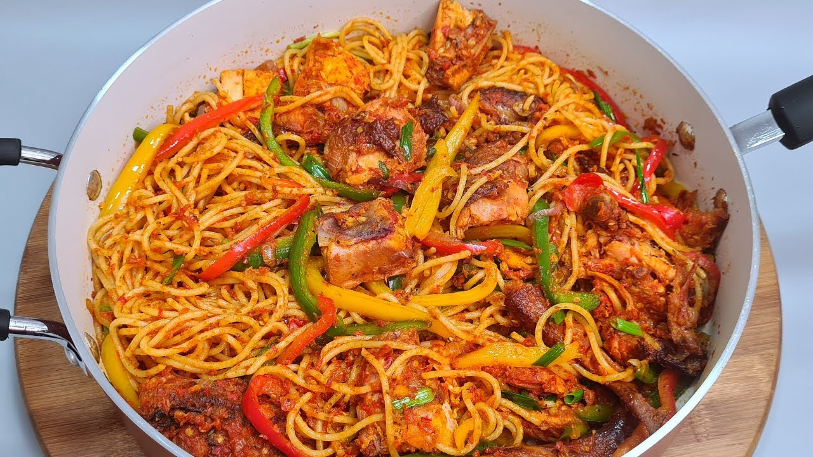

Stir Fry Chicken Spaghetti

Description
It is a highly nutritious Italian dish you can make from the comfort of your home. It’s quick to prepare, taking less than 25 minutes in total, and can be enjoyed by all ages
Ingredients
- 1 Pack of Spaghetti
- 3 cups of water
- 200g of shredded chicken (cooked)
- 5 Tomatoes (Sliced)
- 1 Red Pepper(Sliced)
- 1 Green Pepper(Sliced)
- 1 Onion (Sliced)
- 1 teaspoon Ginger (Chopped)
- 1 teaspoon Garlic (Chopped)
- 1/4 Cup Chicken stock
- 1 Seasoning Cube
- 1 teaspoon salt
- 1 teaspoon Curry powder
- 1 teaspoon Thyme
- 3 teaspoon Vegetable Oil
Steps
- Boil the spaghetti with 2 table spoons of Vegetable Oil and a little salt until it’s al dente (almost soft) for 10-15 mins. Drain water and set aside.
- Wash and dice all the vegetables (tomatoes, green pepper, red pepper, carrot, spring onions, garlic, ginger) separately and set aside.
- Debone and cut the chicken to bite sized pieces.
- Heat up 1 cooking spoon of Vegetable oil in a large pot, add garlic and onions and cook for 2 minutes.
- Add diced tomatoes, green pepper, red pepper, carrots, seasoning cubes, curry, thyme and cook for 3-5 mins, stir frequently.
- Combine everything and allow stir fry for another 2minutes
- Your stir fry chicken spaghetti is ready!
Go back